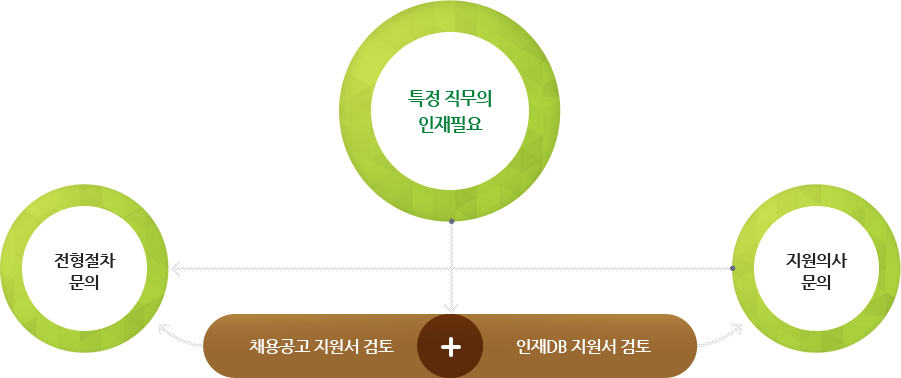

풀무원은 바르고 창의적인 인재를 기다립니다.
인재등록을 통해 지금 지원해보세요.
인재DB에 지원서를 등록해 주시면 희망직무에 채용공고가 발생하거나,
여러분의 이력에 맞는 직무의 채용이 발생한 경우, 바로 연락을 드립니다.
풀무원에서는 바르고 창의적인 인재의 적극적인 지원을 기다립니다.

특정 직무의 인재가 필요할 경우 채용공고 지원서 및 인재 DB의 지원서를 함께 검토합니다. 이후 전형절차와 지원의사를 문의하여 채용과정이 시작됩니다.
- 지원서를 지속적으로 수정 및 보완하여 주시기 바랍니다.
- 인재DB에 지원서를 작성했더라도 진행중인 공채에 자동으로 지원되지 않습니다.